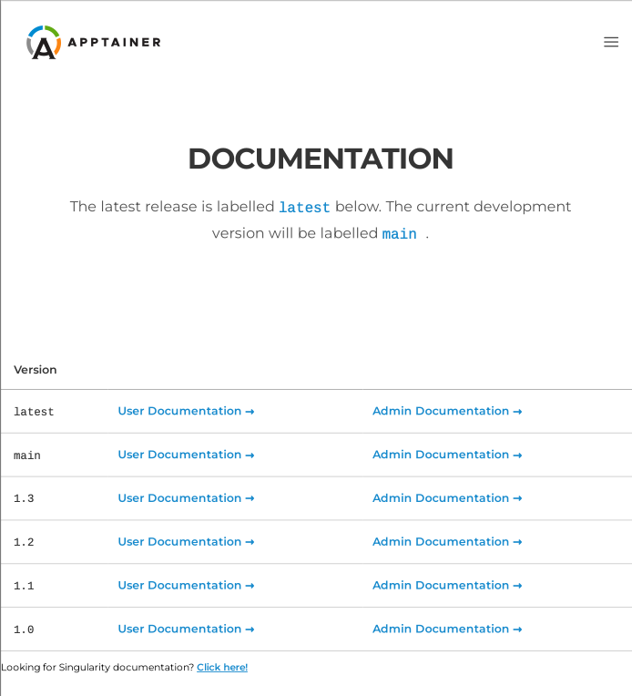

Running Services¶
There are different ways in which you can run
Apptainer containers. If you use commands like run, exec and
shell to interact with processes in the container, you are running
Apptainer containers in the foreground. Apptainer, also lets you
run containers in a “detached” or “daemon” mode which can run different
services in the background. A “service” is essentially a process running
in the background that multiple different clients can use. For example,
a web server or a database. To run services in an Apptainer container
one should use instances. A container instance is a persistent and
isolated version of the container image that runs in the background.
Overview¶
Apptainer has the concept of instances allowing users to run services in Apptainer. This page will help you understand instances using an elementary example followed by a more useful example running an NGINX web server using instances. In the end, you will find a more detailed example of running an instance of an API that converts URL to PDFs.
To begin with, suppose you want to run an NGINX web server outside of a container. On Ubuntu, you can simply install NGINX and start the service by:
$ sudo apt-get update && sudo apt-get install -y nginx
...
$ sudo service nginx start
If you were to do something like this from within a container you would also see the service start, and the web server running. But then if you were to exit the container, the process would continue to run within an unreachable mount namespace. The process would still be running, but you couldn’t easily kill or interface with it. This is a called an orphan process. Apptainer instances give you the ability to handle services properly.
Container Instances in Apptainer¶
For demonstration, let’s use an easy (though somewhat useless) example
of alpine_latest.sif from Apptainer’s github container registry:
$ apptainer pull oras://ghcr.io/apptainer/alpine:latest
The above command will save the alpine image as alpine_latest.sif.
To start an instance, you should follow this procedure :
[command] [image] [name of instance]
$ apptainer instance start alpine_latest.sif instance1
This command causes Apptainer to create an isolated environment for
the container services to live inside. One can confirm that an instance
is running by using the instance list command like so:
$ apptainer instance list
INSTANCE NAME PID IP IMAGE
instance1 22084 /home/dave/instances/alpine_latest.sif
Note
The instances are linked with your user account. So make sure to run
all instance commands either with or without the sudo
privilege. If you start an instance with sudo then you must
list it with sudo as well, or you will not be able to locate the
instance.
If you want to run multiple instances from the same image, it’s as simple as running the command multiple times with different instance names. The instance name uniquely identify instances, so they cannot be repeated.
$ apptainer instance start alpine_latest.sif instance2
$ apptainer instance start alpine_latest.sif instance3
And again to confirm that the instances are running as we expected:
$ apptainer instance list
INSTANCE NAME PID IP IMAGE
instance1 22084 /home/dave/instances/alpine_latest.sif
instance2 22443 /home/dave/instances/alpine_latest.sif
instance3 22493 /home/dave/instances/alpine_latest.sif
You can also filter the instance list by supplying a pattern:
$ apptainer instance list '*2'
INSTANCE NAME PID IP IMAGE
instance2 22443 /home/dave/instances/alpine_latest.sif
You can use the apptainer run/exec commands on instances:
$ apptainer run instance://instance1
$ apptainer exec instance://instance2 cat /etc/os-release
When using run with an instance URI, the runscript will be
executed inside of the instance. Similarly with exec, it will
execute the given command in the instance.
If you want to poke around inside of your instance, you can do a normal
apptainer shell command, but give it the instance URI:
$ apptainer shell instance://instance3
Apptainer>
When you are finished with your instance you can clean it up with the
instance stop command as follows:
$ apptainer instance stop instance1
If you have multiple instances running and you want to stop all of them, you can do so with a wildcard or the –all flag. The following three commands are all identical.
$ apptainer instance stop \*
$ apptainer instance stop --all
$ apptainer instance stop -a
Note
Note that you must escape the wildcard with a backslash like this
\* to pass it properly.
Nginx “Hello-world” in Apptainer¶
The above example, although not very useful, should serve as a fair introduction to the concept of Apptainer instances and running services in the background. The following illustrates a more useful example of setting up a sample NGINX web server using instances. First we will create a basic definition file (let’s call it nginx.def):
Bootstrap: docker
From: nginx
Includecmd: no
%startscript
nginx
This downloads the official NGINX Docker container, converts it to a Apptainer image, and tells it to run NGINX when you start the instance. Since we’re running a web server, we’re going to run the following commands as root.
$ apptainer build nginx.sif nginx.def
...
$ sudo apptainer instance start --writable-tmpfs nginx.sif web
Note
The above start command requires sudo because we are running
a web server. Also, to let the instance write temporary files during
execution, you should use --writable-tmpfs while starting the
instance.
Just like that we’ve downloaded, built, and run an NGINX Apptainer image. And to confirm that it’s correctly running:
$ curl localhost
<!DOCTYPE html>
<html>
<head>
<title>Welcome to nginx!</title>
<style>
body {
width: 35em;
margin: 0 auto;
font-family: Tahoma, Verdana, Arial, sans-serif;
}
</style>
</head>
<body>
<h1>Welcome to nginx!</h1>
<p>If you see this page, the nginx web server is successfully installed and
working. Further configuration is required.</p>
<p>For online documentation and support please refer to
<a href="http://nginx.org/">nginx.org</a>.<br/>
Commercial support is available at
<a href="http://nginx.com/">nginx.com</a>.</p>
<p><em>Thank you for using nginx.</em></p>
</body>
</html>
Visit localhost on your browser, you should see a Welcome message!
Putting all together¶
In this section, we will demonstrate an example of packaging a service into a container and running it. The service we will be packaging is an API server that converts a web page into a PDF, and can be found here. You can build the image by following the steps described below or you can just download the final image directly from the container registry, simply run:
$ apptainer pull url-to-pdf.sif oras://ghcr.io/apptainer/doc-examples/url-to-pdf:latest
Building the image¶
This section will describe the requirements for creating the definition
file (url-to-pdf.def) that will be used to build the container image.
url-to-pdf-api is based on a Node 8 server that uses a headless
version of Chromium called Puppeteer. Let’s first choose a base
from which to build our container, in this case the docker image
node:8 which comes pre-installed with Node 8 has been used:
Bootstrap: docker
From: node:8
Includecmd: no
Puppeteer also requires a slew of dependencies to be manually installed
in addition to Node 8, so we can add those into the post section as
well as the installation script for the url-to-pdf:
%post
apt-get update && apt-get install -yq gconf-service libasound2 \
libatk1.0-0 libc6 libcairo2 libcups2 libdbus-1-3 libexpat1 \
libfontconfig1 libgcc1 libgconf-2-4 libgdk-pixbuf2.0-0 \
libglib2.0-0 libgtk-3-0 libnspr4 libpango-1.0-0 \
libpangocairo-1.0-0 libstdc++6 libx11-6 libx11-xcb1 libxcb1 \
libxcomposite1 libxcursor1 libxdamage1 libxext6 libxfixes3 libxi6 \
libxrandr2 libxrender1 libxss1 libxtst6 ca-certificates \
fonts-liberation libappindicator1 libnss3 lsb-release xdg-utils \
wget curl && rm -r /var/lib/apt/lists/*
git clone https://github.com/alvarcarto/url-to-pdf-api.git pdf_server
cd pdf_server
npm install
chmod -R 0755 .
cp .env.sample .env
And now we need to define what happens when we start an instance of the container. In this situation, we want to run the commands that starts up the url-to-pdf service:
%startscript
cd /pdf_server
# Use nohup and /dev/null to completely detach server process from terminal
nohup npm start > /dev/null 2>&1 < /dev/null &
Also, the url-to-pdf service requires some environment variables to
be set, which we can do in the environment section:
%environment
NODE_ENV=development
PORT=9000
ALLOW_HTTP=true
URL=localhost
export NODE_ENV PORT ALLOW_HTTP URL
The complete definition file will look like this:
Bootstrap: docker
From: node:8
Includecmd: no
%post
apt-get update && apt-get install -yq gconf-service libasound2 \
libatk1.0-0 libc6 libcairo2 libcups2 libdbus-1-3 libexpat1 \
libfontconfig1 libgcc1 libgconf-2-4 libgdk-pixbuf2.0-0 \
libglib2.0-0 libgtk-3-0 libnspr4 libpango-1.0-0 \
libpangocairo-1.0-0 libstdc++6 libx11-6 libx11-xcb1 libxcb1 \
libxcomposite1 libxcursor1 libxdamage1 libxext6 libxfixes3 libxi6 \
libxrandr2 libxrender1 libxss1 libxtst6 ca-certificates \
fonts-liberation libappindicator1 libnss3 lsb-release xdg-utils \
wget curl && rm -r /var/lib/apt/lists/*
git clone https://github.com/alvarcarto/url-to-pdf-api.git pdf_server
cd pdf_server
npm install
chmod -R 0755 .
cp .env.sample .env
%startscript
cd /pdf_server
# Use nohup and /dev/null to completely detach server process from terminal
nohup npm start > /dev/null 2>&1 < /dev/null &
%environment
NODE_ENV=development
PORT=9000
ALLOW_HTTP=true
URL=localhost
export NODE_ENV PORT ALLOW_HTTP URL
The container can be built like so:
$ apptainer build url-to-pdf.sif url-to-pdf.def
Running the Service¶
We can now start an instance and run the service:
$ apptainer instance start url-to-pdf.sif pdf
Note
If there occurs an error related to port connection being refused
while starting the instance or while using it later, you can try
specifying different port numbers in the %environment section of
the definition file above. Also, the starting directory has to
be bound in to the container and writable, so something under your
home directory is easiest.
We can confirm it’s working by sending the server an http request using curl:
$ curl -o apptainer.pdf localhost:9000/api/render?url=http://apptainer.org/docs
% Total % Received % Xferd Average Speed Time Time Time Current
Dload Upload Total Spent Left Speed
100 64753 100 64753 0 0 19663 0 0:00:03 0:00:03 --:--:-- 19669
You should see a PDF file being generated like the one shown below:
If you shell into the instance, you can see the running processes:
$ apptainer shell instance://pdf
Apptainer> ps -wef
UID PID PPID C STIME TTY TIME CMD
user 1 0 0 14:13 ? 00:00:00 sinit
user 13 1 0 14:13 ? 00:00:00 npm
user 23 13 0 14:13 ? 00:00:00 sh -c env-cmd nodemon --watch ./src -e js src/index.js
user 24 23 0 14:13 ? 00:00:00 node /pdf_server/node_modules/.bin/env-cmd nodemon --watch ./src -e js src/index.js
user 30 24 0 14:13 ? 00:00:00 node /pdf_server/node_modules/.bin/nodemon --watch ./src -e js src/index.js
user 42 30 0 14:13 ? 00:00:00 /usr/local/bin/node src/index.js
user 155 0 0 14:23 pts/1 00:00:00 /bin/bash --norc
user 161 155 0 14:23 pts/1 00:00:00 ps -wef
When you are finished, use the instance stop command to stop the running instance.
$ apptainer instance stop pdf
Making it Fancy¶
Now that we have confirmation that the server is working, let’s make it
a little cleaner. It’s difficult to remember the exact curl command
and URL syntax each time you want to request a PDF, so let’s automate
it. Instead of creating completely separate containers for the server
and our streamlined client, it’d be nice to have them both available in
the same SIF file. To do that, we can use Scientific Filesystem (SCIF)
apps.
Note
SCIF is a standard for encapsulating multiple apps into a container. A container with SCIF apps has multiple entry points, and you can choose which to run easily. Each entry point can carry out a different task with it’s own environment, metadata etc., without the need for a collection of different containers.
Apptainer implements SCIF, and you can read more about how to use it in the SCIF Apps section.
SCIF is not specific to Apptainer. You can learn more about it at the project site: <https://sci-f.github.io/>`_.
First off, we’re going to move the installation of the url-to-pdf into an app, so that there is a designated spot to place output files. To do that, we want to add a section to our definition file to build the server:
%appinstall pdf_server
git clone https://github.com/alvarcarto/url-to-pdf-api.git pdf_server
cd pdf_server
npm install
chmod -R 0755 .
cp .env.sample .env
And update our startscript to point to the app location:
%startscript
cd /scif/apps/pdf_server/pdf_server
# Use nohup and /dev/null to completely detach server process from terminal
nohup npm start > /dev/null 2>&1 < /dev/null &
Now we want to define the pdf_client app, which we will run to send the requests to the server:
%apprun pdf_client
if [ -z "${1:-}" ]; then
echo "Usage: apptainer run --app pdf <instance://name> <URL> [output file]"
exit 1
fi
curl -o "${APPTAINER_APPDATA}/output/${2:-output.pdf}" "${URL}:${PORT}/api/render?url=${1}"
As you can see, the pdf_client app checks to make sure that the user
provides at least one argument.
The full def file will look like this:
Bootstrap: docker
From: node:8
Includecmd: no
%post
apt-get update && apt-get install -yq gconf-service libasound2 \
libatk1.0-0 libc6 libcairo2 libcups2 libdbus-1-3 libexpat1 \
libfontconfig1 libgcc1 libgconf-2-4 libgdk-pixbuf2.0-0 \
libglib2.0-0 libgtk-3-0 libnspr4 libpango-1.0-0 \
libpangocairo-1.0-0 libstdc++6 libx11-6 libx11-xcb1 libxcb1 \
libxcomposite1 libxcursor1 libxdamage1 libxext6 libxfixes3 libxi6 \
libxrandr2 libxrender1 libxss1 libxtst6 ca-certificates \
fonts-liberation libappindicator1 libnss3 lsb-release xdg-utils \
wget curl && rm -r /var/lib/apt/lists/*
%appinstall pdf_server
git clone https://github.com/alvarcarto/url-to-pdf-api.git pdf_server
cd pdf_server
npm install
chmod -R 0755 .
cp .env.sample .env
%startscript
cd /scif/apps/pdf_server/pdf_server
# Use nohup and /dev/null to completely detach server process from terminal
nohup npm start > /dev/null 2>&1 < /dev/null &
%environment
NODE_ENV=development
PORT=9000
ALLOW_HTTP=true
URL=localhost
export NODE_ENV PORT ALLOW_HTTP URL
%apprun pdf_client
if [ -z "${1:-}" ]; then
echo "Usage: apptainer run --app pdf <instance://name> <URL> [output file]"
exit 1
fi
curl -o "${APPTAINER_APPDATA}/output/${2:-output.pdf}" "${URL}:${PORT}/api/render?url=${1}"
$ apptainer build url-to-pdf-app.sif url-to-pdf-app.def
Now that we have an output directory in the container, we need to expose
it to the host using a bind mount. Once we’ve rebuilt the container,
make a new directory called /tmp/out for the generated PDFs to go.
$ mkdir /tmp/out
After building the image from the edited definition file we simply start the instance:
$ apptainer instance start --bind /tmp/out/:/output url-to-pdf-app.sif pdf
To request a pdf simply do:
$ apptainer run --app pdf_client instance://pdf http://apptainer.org/docs apptainer.pdf
To confirm that it worked:
$ ls /tmp/out/
apptainer.pdf
When you are finished, use the instance stop command to stop the running instance.
$ apptainer instance stop pdf
Note
If the service you want to run in your instance requires a bind
mount, then you must pass the --bind option when calling
instance start. For example, if you wish to capture the output of
the web container instance which is placed at /output/ inside
the container you could do:
$ apptainer instance start --bind output/dir/outside/:/output/ nginx.sif web
System integration / PID files¶
If you are running services in containers you may want them to be started on boot, and shutdown gracefully automatically. This is usually performed by an init process, or another supervisor daemon installed on your host. Many init and supervisor daemons support managing processes via pid files.
You can specify a –pid-file option to apptainer instance start to write the PID for an instance to the specified file, e.g.
$ apptainer instance start --pid-file /home/dave/alpine.pid alpine_latest.sif instanceA
$ cat /home/dave/alpine.pid
23727
An example service file for an instance controlled by systemd is below. This can be used as a template to setup containerized services under systemd.
[Unit]
Description=Web Instance
After=network.target
[Service]
Type=forking
Restart=always
User=www-data
Group=www-data
PIDFile=/run/web-instance.pid
ExecStart=/usr/local/bin/apptainer instance start --pid-file /run/web-instance.pid /data/containers/web.sif web-instance
ExecStop=/usr/local/bin/apptainer instance stop web-instance
[Install]
WantedBy=multi-user.target
Note that Type=forking is required here, since instance start
starts an instance and then exits.